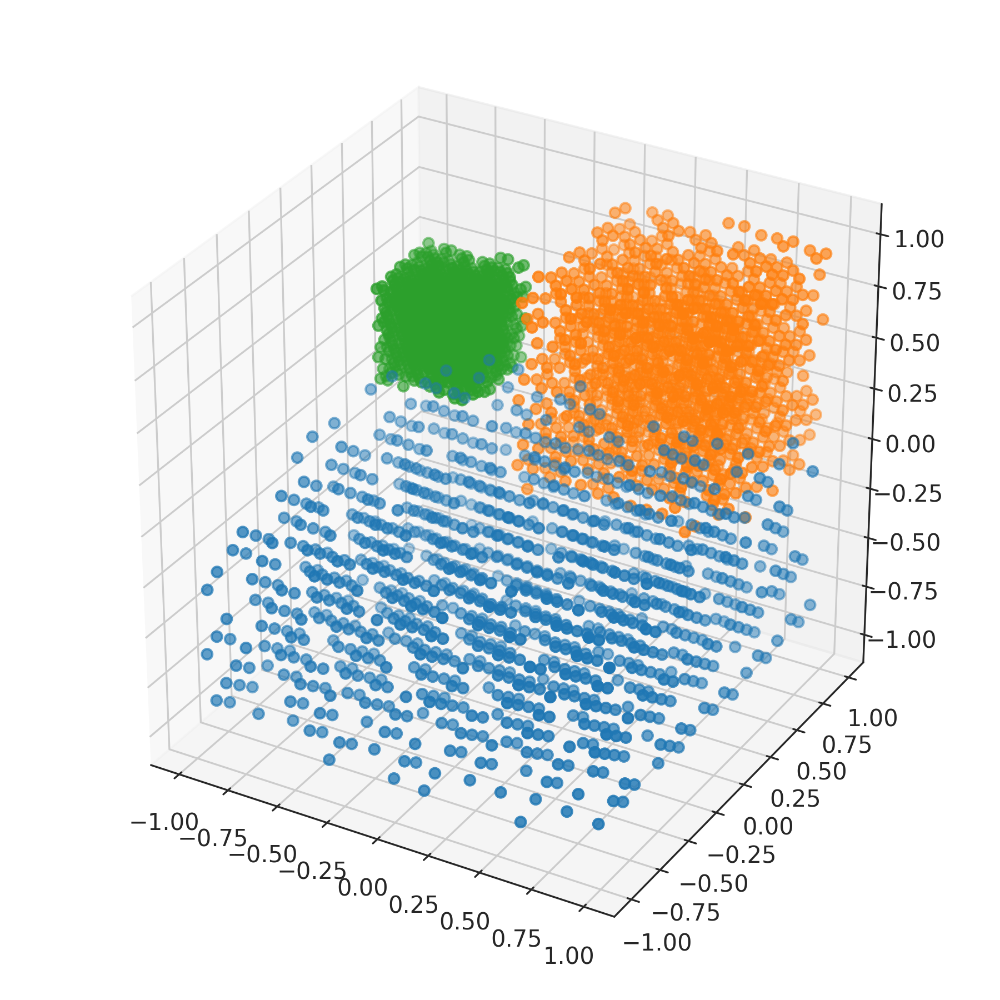

nengolib.stats.ScatteredCube¶
-
stats.cube= ScatteredCube(low=array([-1]), high=array([1]), base=Sobol())¶
-
class
nengolib.stats.ScatteredCube(low=-1, high=1, base=Sobol())[source]¶ Number-theoretic distribution over the hypercube.
Transforms quasi Monte Carlo samples from the unit hypercube to range between
lowandhigh. These bounds may optionally bearray_likewith shape matching the sample dimensionality.Parameters: low :
floatorarray_like, optionalLower-bound(s) for each sample. Defaults to
-1.high :
floatorarray_like, optionalUpper-bound(s) for each sample. Defaults to
+1.Other Parameters: base :
nengo.dists.Distribution, optionalThe base distribution from which to draw quasi Monte Carlo samples. Defaults to
Soboland should not be changed unless you have some alternative number-theoretic sequence over[0, 1].See also
Notes
The
Soboldistribution is deterministic. Nondeterminism comes from a randomd–dimensional shift (with wrap-around).Examples
>>> from nengolib.stats import ScatteredCube >>> s1 = ScatteredCube([-1, -1, -1], [1, 1, 0]).sample(1000, 3) >>> s2 = ScatteredCube(0, 1).sample(1000, 3) >>> s3 = ScatteredCube([-1, .5, 0], [-.5, 1, .5]).sample(1000, 3)
>>> import matplotlib.pyplot as plt >>> from mpl_toolkits.mplot3d import Axes3D >>> plt.figure(figsize=(6, 6)) >>> ax = plt.subplot(111, projection='3d') >>> ax.scatter(*s1.T) >>> ax.scatter(*s2.T) >>> ax.scatter(*s3.T) >>> plt.show()
Methods
sample(n[, d, rng])Samples npoints inddimensions.